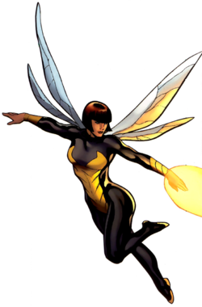

La Viuda Negra Ultimate (Natasha Romanov) es un personaje ficticio del Universo Marvel Ultimate basado en la Viuda Negra del Universo Marvel. Apareció por primera vez en Ultimate Marvel Team-Up #14 en una historia escrita por Brian Michael Bendis y dibujada por Terry Moore antes de convertirse en uno de los personajes principales de los Ultimates de Mark Millar y Bryan Hitch.
Natasha Romanov es una asesina y antigua espía de la KGB. Fue apodada la Viuda Negra porque todos sus maridos murieron en desafortunados accidentes. Ella fue originalmente parte del equipo de operaciones encubiertas ("Black ops") de los Ultimates, pero posteriormente fue puesta en un estatus público después que un pasado abiertamente aceptable fuera escrito para ella. La Viuda Negra parece tener mejoras genéticas o cibernéticas que le permiten coordinarse en combate mucho mejor que un humano normal.
- Nombre: Natasha Romanoff (Natalia Alianovna Romanova
- Alias: La Viuda Negra
- Especialidad: La Viuda Negra es una atleta y gimnasta de clase mundial, experta en artes marciales (incluyendo karate, judo, savate, varios estilos de kung fu y boxeo), tiradora y especialista en armas; así como también cuenta con un extenso entrenamiento en espionaje. Y es también una bailarina consumada.
- Equipo: La Viuda Negra usa una variedad de equipos inventados por científicos y técnicos soviéticos, mejorados posteriormente por los científicos y técnicos de SHIELD. Generalmente, usa distintivos brazaletes que disparan "la mordida de la viuda", una explosión de energía electro-estática que pueden cargar hasta 30.000 voltios. Así como también usa "la línea viuda"; que incluye ganchos y gases lacrimógenos, junto con un nuevo elemento incluido en el arco de la serie en curso "Kiss or Kill", llamado "el beso de la viuda": un gas que noquea instantáneamente. Usa también un cinturón de discos metálicos, algunos con cargas explosivas y otros han demostrado tener equipos para el hogar.
- Afiliaciones actuales: Ultimates, Avengers
- Miembros del entorno: Drakeov Romanoff (Padre, fallecido), James Rogers (Hijo, producto de su relación con el Capitán América), Steve Rogers (Capitán América, relación amorosa).
- Estatus actual: Activo
Atrás